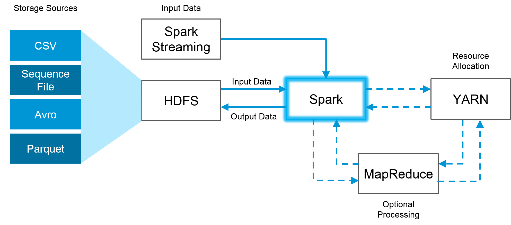
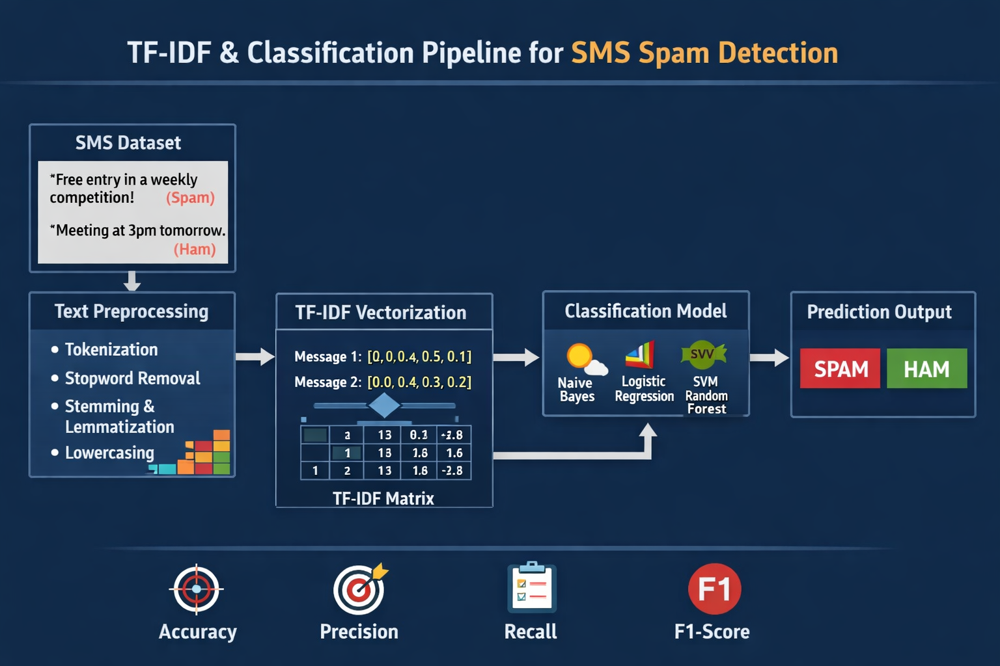

Data Science · Machine Learning · Health Analytics
Angèle Blandine
Feussi Nguemkam
Je transforme des données complexes en modèles fiables, en analyses explicables et en décisions utiles.
Diplômée en Sciences des données appliquées et titulaire d’un master en Sciences de la Santé, je développe des solutions à l’intersection de l’intelligence artificielle, de l’imagerie médicale et de l’analytique stratégique.
Disponible pour un poste junior ou un stage pré-emploi · Ottawa, Canada
01
Travaux sélectionnés
Des projets conçus de bout en bout
Une sélection qui démontre ma capacité à préparer les données, construire des modèles, évaluer leurs performances et communiquer les résultats.
Projet vedetteIA appliquée à la santé
Classification d’images IRM par Deep Learning
Pipeline complet de classification d’images médicales fondé sur le transfert d’apprentissage avec ResNet50, de la préparation des données à l’interprétation des prédictions.
- Analyse exploratoire et contrôle de la qualité des images
- Amélioration du contraste avec CLAHE et préparation des données
- Entraînement, fine-tuning et évaluation d’un modèle ResNet50
- Interprétabilité des décisions du modèle avec Grad-CAM
PythonTensorFlowKerasResNet50Grad-CAMOpenCV
Consulter le dépôt ↗
02
Machine Learning · Santé
Classification du risque de diabète
Comparaison de modèles pour classifier le risque de diabète en contexte binaire et multiclasse à partir de variables médicales et socio-démographiques.
PythonNeural NetworksRandom ForestXGBoost
Voir le projet ↗
03
Big Data · Data Engineering

NYC Taxi Big Data Pipeline
Pipeline distribué pour ingérer, nettoyer et analyser plus de 12 millions de trajets de taxi, avec stockage HDFS et traitements Spark.
PySparkSpark SQLHadoopDockerLinux
Voir le projet ↗
04
Analytics · Data Quality

NexaStore Analytics Suite
Projet analytique structuré de l’exploration à la décision : qualité des données, priorisation des correctifs, KPIs et recommandations stratégiques.
PandasEDAData QualityKPIsExcel
Voir le projet ↗
05
NLP · Machine Learning

Détection de SMS indésirables
Pipeline NLP comparant régression logistique, SVM et MLP, avec TF-IDF et représentations denses apprises par autoencodeur.
NLTKTF-IDFSVMKerasAutoencoder
Voir le projet ↗
02
Expertise
Un profil data polyvalent
ML
Machine Learning
Classification, transfert d’apprentissage, feature engineering, optimisation et évaluation rigoureuse.
AI
IA pour la santé
Imagerie médicale, données cliniques, interprétabilité et traduction des résultats pour un contexte scientifique.
DE
Data Engineering
Préparation, contrôle qualité et traitement distribué avec Spark, Hadoop, SQL et Python.
BI
Analytics métier
EDA, conception de KPIs, storytelling analytique et recommandations orientées décision.
PythonSQLRPandasScikit-learnTensorFlowKerasPySparkHadoopGit
03
Parcours
La rigueur scientifique au service des données
Mon parcours combine un Master en Sciences de la Santé — bactériologie et virologie — et une formation en Sciences des Données Appliquées au Collège La Cité.
Cette double expertise me permet de comprendre les enjeux scientifiques, de structurer une démarche analytique robuste et de présenter les résultats avec clarté aux parties prenantes.
LocalisationOttawa, Canada
OrientationData Science · Health AI
DisponibilitéPoste junior · Stage pré-emploi